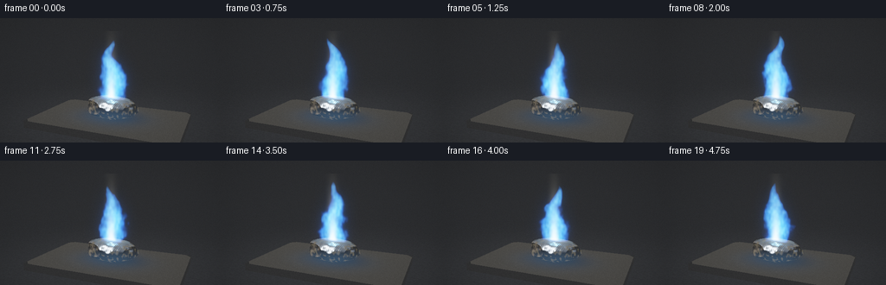
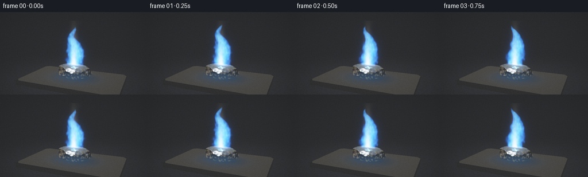

CODING AGENTS AS PIXEL WORLD MODELS
traex/GPT-6.1-Sol · material_0012
点击播放 · 原生 RGB 像素
逐轮保存的候选
回放视频、检查图与代码变化。
每份候选均可单独播放。实际图片检查记录在下方工具轨迹中。
候选 01播放与检查图
点击播放 · 原生 RGB 像素


展开代码变化
--- 上一保存版本
+++ 本次保存版本
@@ -0,0 +1,225 @@
+"""Procedural RGB macro shot of burning lead. No external renderers or assets."""
+from pathlib import Path
+import json
+import numpy as np
+from PIL import Image, ImageFilter
+import artifact_io
+
+ROOT=Path(__file__).resolve().parent
+SPEC=json.loads((ROOT/'task_spec.json').read_text())
+W,H=SPEC['width']*2,SPEC['height']*2
+rng=np.random.default_rng(813)
+noise_grid=rng.random((64,64,64)).astype(np.float32)
+
+def noise(x,y,z):
+ x=np.asarray(x);y=np.asarray(y);z=np.asarray(z)
+ ix=np.floor(x).astype(np.int32); iy=np.floor(y).astype(np.int32); iz=np.floor(z).astype(np.int32)
+ u=x-ix;v=y-iy;w=z-iz
+ u=u*u*(3-2*u);v=v*v*(3-2*v);w=w*w*(3-2*w)
+ a=noise_grid[ix%64,iy%64,iz%64]*(1-u)+noise_grid[(ix+1)%64,iy%64,iz%64]*u
+ b=noise_grid[ix%64,(iy+1)%64,iz%64]*(1-u)+noise_grid[(ix+1)%64,(iy+1)%64,iz%64]*u
+ c=noise_grid[ix%64,iy%64,(iz+1)%64]*(1-u)+noise_grid[(ix+1)%64,iy%64,(iz+1)%64]*u
+ d=noise_grid[ix%64,(iy+1)%64,(iz+1)%64]*(1-u)+noise_grid[(ix+1)%64,(iy+1)%64,(iz+1)%64]*u
+ return (a*(1-v)+b*v)*(1-w)+(c*(1-v)+d*v)*w
+
+def normalize(a):
+ return a/np.maximum(np.linalg.norm(a,axis=-1,keepdims=True),1e-8)
+
+# A fixed, moderately low, close-up camera.
+camera=np.array([2.85,2.48,6.7],np.float32)
+target=np.array([0,1.08,0],np.float32)
+forward=normalize(target-camera); right=normalize(np.cross(forward,[0,1,0])); up=np.cross(right,forward)
+yy,xx=np.mgrid[:H,:W]
+rays=normalize(forward+((xx-W/2)/595)[...,None]*right+((H/2-yy)/595)[...,None]*up).astype(np.float32)
+O=np.broadcast_to(camera,rays.shape)
+
+def lead_sdf(p):
+ q=(p-np.array([0,.286,0]))/np.array([.83,.325,.52])
+ # Ellipsoid, cut by irregular planes: recognizable torn, flattened metal.
+ s=(np.linalg.norm(q,axis=-1)-1)*.29
+ s=np.maximum(s,p[...,1]-.57+.08*p[...,0]-.04*p[...,2])
+ s=np.maximum(s,.61*p[...,0]+.33*p[...,2]+.11*p[...,1]-.485)
+ s=np.maximum(s,-.73*p[...,0]+.20*p[...,2]+.14*p[...,1]-.56)
+ s=np.maximum(s,.62*p[...,2]-.37*p[...,0]+.1*p[...,1]-.39)
+ s=np.maximum(s,-p[...,1]+.014)
+ # Modest irregular folded surface, not a regular geometric ellipsoid.
+ n=noise(p[...,0]*8+17,p[...,1]*10+3,p[...,2]*8+6)
+ s+=(n-.5)*.024
+ return s
+
+# Static ray-marched metal geometry.
+depth_floor=(-.26-camera[1])/rays[...,1]
+Pfloor=O+depth_floor[...,None]*rays
+base=np.empty((H,W,3),np.float32)
+# Charcoal slate bench, fading to darkness behind the object.
+grain=noise(Pfloor[...,0]*34, Pfloor[...,2]*34, np.full((H,W),6.1))
+grain2=noise(Pfloor[...,0]*160,Pfloor[...,2]*160,np.full((H,W),1.8))
+bench=(.028+.010*grain+.004*grain2)*(.6+.4*np.exp(-np.sum(Pfloor[...,[0,2]]**2,axis=-1)/14))
+base[:]=bench[...,None]*np.array([.8,.85,.95])
+depth=depth_floor.copy()
+# A thick, chamfered refractory block below the metal.
+slabtop=(-.012-camera[1])/rays[...,1]; ps=O+slabtop[...,None]*rays
+slabmask=(np.abs(ps[...,0])<2.15)&(np.abs(ps[...,2])<1.28)
+slabmask &= (np.abs(ps[...,0])+np.abs(ps[...,2])<3.27)
+sg=noise(ps[...,0]*55+8,ps[...,2]*55+7,np.full((H,W),4.8))
+sg2=noise(ps[...,0]*180+5,ps[...,2]*180,np.full((H,W),9.0))
+rad=np.sqrt((ps[...,0]/.95)**2+(ps[...,2]/.75)**2)
+scorch=.65+.35*np.clip(rad-.28,0,1)
+slabcol=(.046+.012*sg+.007*sg2)*scorch
+slabcolor=slabcol[...,None]*np.array([1.02,.98,.89])
+# Porous pale flecks and radial soot marks around the burning sample.
+flecks=np.maximum(sg2-.82,0)*.1
+slabcolor+=flecks[...,None]
+base[slabmask]=slabcolor[slabmask];depth[slabmask]=slabtop[slabmask]
+for axis,limit in [(0,2.15),(2,1.28)]:
+ for sign in [-1,1]:
+ tt=(sign*limit-camera[axis])/rays[...,axis]
+ pp=O+tt[...,None]*rays
+ m=(tt>0)&(tt<depth)&(pp[...,1]>-.225)&(pp[...,1]<-.012)&(np.abs(pp[...,2 if axis==0 else 0])<(1.28 if axis==0 else 2.15))
+ c=(.022+.008*noise(pp[...,0]*60,pp[...,1]*60,pp[...,2]*60))
+ base[m]=(c[...,None]*np.array([.85,.86,.89]))[m]
+ depth[m]=tt[m]
+# Contact and ambient shadow.
+shadow=np.exp(-((ps[...,0]-.12)/.78)**2-((ps[...,2]+.06)/.49)**2)
+base[slabmask]*=(1-.72*shadow[slabmask,None])
+
+# Locate rays in a loose bounding sphere, then march only those rays.
+bc=np.array([0,.28,0]);oc=camera-bc
+b=np.sum(rays*oc,axis=-1);c=np.dot(oc,oc)-.93**2
+disc=b*b-c
+hitbox=disc>0
+idx=np.flatnonzero(hitbox)
+rd=rays.reshape(-1,3)[idx]
+tt=(-b[hitbox]-np.sqrt(disc[hitbox])).astype(np.float32)
+end=(-b[hitbox]+np.sqrt(disc[hitbox])).astype(np.float32)
+alive=np.ones(len(idx),bool);hit=np.zeros(len(idx),bool)
+for _ in range(130):
+ ids=np.flatnonzero(alive)
+ if not len(ids):break
+ p=camera+tt[ids,None]*rd[ids]
+ d=lead_sdf(p)
+ reached=d<.0007
+ hit[ids[reached]]=True;alive[ids[reached]]=False
+ moving=ids[~reached]
+ tt[moving]+=np.maximum(d[~reached]*.8,.0004)
+ alive[tt>end]=False
+mi=idx[hit]; mp=camera+tt[hit,None]*rd[hit]
+eps=.0014
+norm=[]
+for a in range(3):
+ e=np.zeros(3);e[a]=eps
+ norm.append((lead_sdf(mp+e)-lead_sdf(mp-e))/(2*eps))
+N=normalize(np.stack(norm,axis=-1))
+# Fine scratched and wrinkled metal surface: a gentle non-destructive bump.
+wrinkle=np.sin(mp[:,0]*127+mp[:,2]*32+5*noise(mp[:,0]*8,mp[:,1]*8,mp[:,2]*8))
+N=normalize(N+np.stack([wrinkle*.06,np.zeros(len(mp)),wrinkle*.024],axis=-1))
+V=-rd[hit]
+reflection=2*np.sum(N*V,axis=-1)[:,None]*N-V
+
+def environment(r):
+ val=np.full(r.shape,.024,np.float32)
+ val+=np.maximum(r[...,1],0)[...,None]*np.array([.13,.15,.18])
+ for direction,color,power in [([-2.2,4.0,3.0],[3.1,3.4,3.7],17),([3,2,-2],[.52,.63,.82],28),([-4,1,-1],[.7,.51,.32],20)]:
+ d=normalize(np.array(direction))
+ val+=np.maximum(np.sum(r*d,axis=-1),0)[...,None]**power*np.array(color)
+ # Softbox strip and deep studio baffle reflected in the pewter.
+ strip=np.exp(-((r[...,0]+.45)/.16)**2-((r[...,1]-.68)/.31)**2-((r[...,2]-.56)/.45)**2)
+ val+=strip[...,None]*np.array([1.8,1.9,2.0])
+ return val
+
+metal=environment(reflection)*np.array([.73,.77,.80])
+metal+=.045*np.maximum(N[:,1],0)[:,None]*np.array([.7,.73,.78])
+texture=noise(mp[:,0]*90+10,mp[:,1]*90,mp[:,2]*90)
+metal*=.78+.3*texture[:,None]
+# Tiny oxide mottling, golden-grey at the rim, avoiding the look of stone.
+oxide=noise(mp[:,0]*16+2,mp[:,1]*16+9,mp[:,2]*16+6)
+oxidized=np.clip((oxide-.58)*3.0,0,.52)
+metal=metal*(1-oxidized[:,None])+np.array([.17,.145,.089])*oxidized[:,None]
+# Hairline dark tears in the metal.
+cracks=np.exp(-(np.sin(mp[:,0]*25+mp[:,2]*13+noise(mp[:,0]*12,mp[:,1]*12,mp[:,2]*12)*5)/.065)**2)
+metal*=1-.15*cracks[:,None]
+base.reshape(-1,3)[mi]=metal
+depth.reshape(-1)[mi]=tt[hit]
+
+# Intersect a tight flame volume; occlusion by the metal is fully respected.
+bmin=np.array([-.95,.34,-.72]);bmax=np.array([.95,3.05,.72])
+a=(bmin-camera)/rays;bvol=(bmax-camera)/rays
+near=np.max(np.minimum(a,bvol),axis=-1);far=np.minimum(np.min(np.maximum(a,bvol),axis=-1),depth)
+valid=(far>near)&(far>0)
+fi=np.flatnonzero(valid);fr=rays.reshape(-1,3)[fi];fn=near.reshape(-1)[fi];ff=far.reshape(-1)[fi]
+steps=76
+step=(ff-fn)/steps
+sample_offsets=(np.arange(steps)+.5)/steps
+
+# Reflection of the flame on the rough silver sample and blue spill on the tile.
+def point_light(p,n,v,t):
+ lp=np.array([.025,.83,.04]);l=lp-p;dist=np.linalg.norm(l,axis=-1);l=l/dist[:,None]
+ half=normalize(l+v); ndl=np.maximum(np.sum(n*l,axis=-1),0); ndh=np.maximum(np.sum(n*half,axis=-1),0)
+ return ((.11*ndl+2.9*ndh**37)/(dist**2+.18))[:,None]*np.array([.27,.65,1.0])*(.94+.06*np.sin(t*9))
+
+frames=[]
+for f in range(SPEC['frames']):
+ time=f/SPEC['fps']
+ img=base.copy()
+ img.reshape(-1,3)[mi]+=point_light(mp,N,V,time)
+ spill=np.exp(-((ps[...,0]-.015)/.87)**2-(ps[...,2]/.65)**2)*(.94+.06*np.sin(time*9))
+ img[slabmask]+=spill[slabmask,None]*np.array([.017,.055,.112])
+ emission=np.zeros((len(fi),3),np.float32)
+ trans=np.ones(len(fi),np.float32)
+ fireheight=1.92*(.96+.045*np.sin(time*4.1)+.028*np.sin(time*10.3))
+ for k in range(steps):
+ t=fn+(ff-fn)*sample_offsets[k]
+ p=camera+t[:,None]*fr
+ x,y,z=p.T;h=y-.39
+ # Coherent, upward-advecting turbulence and an uneven, dancing tip.
+ cx=.038+.070*h*np.sin(h*3.5-time*2.7)+.025*h*np.sin(h*8.2-time*6.0)
+ cz=.04*np.sin(h*5.1-time*2.1)
+ nh=np.clip(h/fireheight,0,1)
+ radius=.29*(1-nh)**.70*(1+.65*np.sin(nh*np.pi))+.015
+ n1=noise(x*7.2+31,y*5.0-time*3.15,z*7.2+8)
+ n2=noise(x*17+5,y*10-time*5.5,z*17+2)
+ radial=np.sqrt(((x-cx)/radius)**2+((z-cz)/(radius*.72))**2)
+ field=1-radial+.64*(n1-.5)+.23*(n2-.5)
+ density=np.clip(field*2.25,0,1.25)
+ density*=np.clip((fireheight-h)*8,0,1)*np.clip(h*13,0,1)
+ # Blue plasma-like outer mantle and luminous white inner combustion.
+ shell=np.exp(-((field-.13)/.15)**2)*np.clip((fireheight-h)*8,0,1)*np.clip(h*15,0,1)
+ core=np.exp(-(((x-.005)/(.12+.04*np.maximum(h,0)))**2+((z+.005)/.12)**2)*2.1)*np.exp(-np.maximum(h,0)*3.0)*np.clip(h*20,0,1)
+ filament=np.clip(n2-.40,0,1)*density
+ col=density[:,None]*np.array([.22,1.8,5.7])+shell[:,None]*np.array([.035,.40,2.4])
+ col+=filament[:,None]*np.array([1.2,2.5,3.0])
+ col+=core[:,None]*np.array([24.,23.,19.])
+ # A faint, thin rising trace of smoke catches the cold flame light.
+ sh=y-1.9
+ sx=.07+.09*np.sin(sh*3-time*1.1)
+ sn=noise(x*9+18,y*8-time*1.6,z*9+5)
+ smoke=np.exp(-((x-sx)/.25)**2-(z/.17)**2)*np.clip(sh*2,0,1)*np.clip((3.05-y)*3,0,1)*np.clip(sn-.42,0,1)*.10
+ col+=smoke[:,None]*np.array([.19,.23,.30])
+ absorption=(density*.15+core*.12+smoke)*step
+ emission+=trans[:,None]*col*step[:,None]
+ trans*=np.exp(-absorption)
+ img.reshape(-1,3)[fi]=img.reshape(-1,3)[fi]*trans[:,None]+emission
+ # Small points of glowing oxide at the burning interface, not flying sparks.
+ hp=(mp[:,1]>.42)
+ hotspot=np.exp(-((mp[:,0]-.05)/.32)**2-(mp[:,2]/.23)**2)*hp
+ img.reshape(-1,3)[mi]+=hotspot[:,None]*np.array([.3,.25,.14])*(.9+.1*np.sin(time*7))
+ # HDR photographic glow. Blur emission only, so the metal stays in focus.
+ emap=np.zeros_like(img);emap.reshape(-1,3)[fi]=emission
+ for blur,weight in [(2.2,.075),(7.5,.046),(18,.027)]:
+ # Float-mode PIL performs linear-light blur without a rendering engine.
+ blurred=np.stack([np.asarray(Image.fromarray(emap[...,c].astype(np.float32),mode='F').convert('L')) for c in range(3)],axis=-1) if False else None
+ # RGB in a high exposure range retains bloom smoothly with ordinary PIL.
+ hdrscale=6.0
+ bi=Image.fromarray(np.uint8(np.clip(emap/hdrscale,0,1)*255),'RGB').filter(ImageFilter.GaussianBlur(blur))
+ img+=np.asarray(bi,np.float32)*(hdrscale/255)*weight
+ # Cinematic exposure, restrained vignette, downsampled antialiasing.
+ image=1-np.exp(-img*1.30)
+ image=np.clip(image,0,1)**(1/2.2)
+ vignette=1-.16*((xx-W*.5)/(W*.7))**2-.12*((yy-H*.5)/(H*.7))**2
+ image*=vignette[...,None]
+ arr=np.uint8(np.clip(image*255,0,255))
+ arr=np.asarray(Image.fromarray(arr).resize((SPEC['width'],SPEC['height']),Image.Resampling.LANCZOS))
+ frames.append(arr)
+ print(f'frame {f+1}/{SPEC["frames"]}',flush=True)
+artifact_io.save(np.stack(frames),ROOT)
+print('Saved RGB sequence and player.',flush=True)
可观测工具轨迹
实际执行的命令与返回图片。
命令 1exit 0
/bin/bash -lc 'ls -la && cat prompt.txt && cat GENERATION_RULES.md && cat task_spec.json'
命令 2exit 0
/bin/bash -lc "cat artifact_io.py && python - <<'PY'
import numpy, PIL
print('numpy',numpy.__version__)
PY"命令 3exit 0
/bin/bash -lc "cat > generate.py <<'PY'
\"\"\"Procedural RGB macro shot of burning lead. No external renderers or assets.\"\"\"
from pathlib import Path
import json
import numpy as np
from PIL import Image, ImageFilter
import artifact_io
ROOT=Path(__file__).resolve().parent
SPEC=json.loads((ROOT/'task_spec.json').read_text())
W,H=SPEC['width']*2,SPEC['height']*2
rng=np.random.default_rng(813)
noise_grid=rng.random((64,64,64)).astype(np.float32)
def noise(x,y,z):
x=np.asarray(x);y=np.asarray(y);z=np.asarray(z)
ix=np.floor(x).astype(np.int32); iy=np.floor(y).astype(np.int32); iz=np.floor(z).astype(np.int32)
u=x-ix;v=y-iy;w=z-iz
u=u*u*(3-2*u);v=v*v*(3-2*v);w=w*w*(3-2*w)
a=noise_grid[ix%64,iy%64,iz%64]*(1-u)+noise_grid[(ix+1)%64,iy%64,iz%64]*u
b=noise_grid[ix%64,(iy+1)%64,iz%64]*(1-u)+noise_grid[(ix+1)%64,(iy+1)%64,iz%64]*u
c=noise_grid[ix%64,iy%64,(iz+1)%64]*(1-u)+noise_grid[(ix+1)%64,iy%64,(iz+1)%64]*u
d=noise_grid[ix%64,(iy+1)%64,(iz+1)%64]*(1-u)+noise_grid[(ix+1)%64,(iy+1)%64,(iz+1)%64]*u
return (a*(1-v)+b*v)*(1-w)+(c*(1-v)+d*v)*w
def normalize(a):
return a/np.maximum(np.linalg.norm(a,axis=-1,keepdims=True),1e-8)
# A fixed, moderately low, close-up camera.
camera=np.array([2.85,2.48,6.7],np.float32)
target=np.array([0,1.08,0],np.float32)
forward=normalize(target-camera); right=normalize(np.cross(forward,[0,1,0])); up=np.cross(right,forward)
yy,xx=np.mgrid[:H,:W]
rays=normalize(forward+((xx-W/2)/595)[...,None]*right+((H/2-yy)/595)[...,None]*up).astype(np.float32)
O=np.broadcast_to(camera,rays.shape)
def lead_sdf(p):
q=(p-np.array([0,.286,0]))/np.array([.83,.325,.52])
# Ellipsoid, cut by irregular planes: recognizable torn, flattened metal.
s=(np.linalg.norm(q,axis=-1)-1)*.29
s=np.maximum(s,p[...,1]-.57+.08*p[...,0]-.04*p[...,2])
s=np.maximum(s,.61*p[...,0]+.33*p[...,2]+.11*p[...,1]-.485)
s=np.maximum(s,-.73*p[...,0]+.20*p[...,2]+.14*p[...,1]-.56)
s=np.maximum(s,.62*p[...,2]-.37*p[...,0]+.1*p[...,1]-.39)
s=np.maximum(s,-p[...,1]+.014)
# Modest irregular folded surface, not a regular geometric ellipsoid.
n=noise(p[...,0]*8+17,p[...,1]*10+3,p[...,2]*8+6)
s+=(n-.5)*.024
return s
# Static ray-marched metal geometry.
depth_floor=(-.26-camera[1])/rays[...,1]
Pfloor=O+depth_floor[...,None]*rays
base=np.empty((H,W,3),np.float32)
# Charcoal slate bench, fading to darkness behind the object.
grain=noise(Pfloor[...,0]*34, Pfloor[...,2]*34, np.full((H,W),6.1))
grain2=noise(Pfloor[...,0]*160,Pfloor[...,2]*160,np.full((H,W),1.8))
bench=(.028+.010*grain+.004*grain2)*(.6+.4*np.exp(-np.sum(Pfloor[...,[0,2]]**2,axis=-1)/14))
base[:]=bench[...,None]*np.array([.8,.85,.95])
depth=depth_floor.copy()
# A thick, chamfered refractory block below the metal.
slabtop=(-.012-camera[1])/rays[...,1]; ps=O+slabtop[...,None]*rays
slabmask=(np.abs(ps[...,0])<2.15)&(np.abs(ps[...,2])<1.28)
slabmask &= (np.abs(ps[...,0])+np.abs(ps[...,2])<3.27)
sg=noise(ps[...,0]*55+8,ps[...,2]*55+7,np.full((H,W),4.8))
sg2=noise(ps[...,0]*180+5,ps[...,2]*180,np.full((H,W),9.0))
rad=np.sqrt((ps[...,0]/.95)**2+(ps[...,2]/.75)**2)
scorch=.65+.35*np.clip(rad-.28,0,1)
slabcol=(.046+.012*sg+.007*sg2)*scorch
slabcolor=slabcol[...,None]*np.array([1.02,.98,.89])
# Porous pale flecks and radial soot marks around the burning sample.
flecks=np.maximum(sg2-.82,0)*.1
slabcolor+=flecks[...,None]
base[slabmask]=slabcolor[slabmask];depth[slabmask]=slabtop[slabmask]
for axis,limit in [(0,2.15),(2,1.28)]:
for sign in [-1,1]:
tt=(sign*limit-camera[axis])/rays[...,axis]
pp=O+tt[...,None]*rays
m=(tt>0)&(tt<depth)&(pp[...,1]>-.225)&(pp[...,1]<-.012)&(np.abs(pp[...,2 if axis==0 else 0])<(1.28 if axis==0 else 2.15))
c=(.022+.008*noise(pp[...,0]*60,pp[...,1]*60,pp[...,2]*60))
base[m]=(c[...,None]*np.array([.85,.86,.89]))[m]
depth[m]=tt[m]
# Contact and ambient shadow.
shadow=np.exp(-((ps[...,0]-.12)/.78)**2-((ps[...,2]+.06)/.49)**2)
base[slabmask]*=(1-.72*shadow[slabmask,None])
# Locate rays in a loose bounding sphere, then march only those rays.
bc=np.array([0,.28,0]);oc=camera-bc
b=np.sum(rays*oc,axis=-1);c=np.dot(oc,oc)-.93**2
disc=b*b-c
hitbox=disc>0
idx=np.flatnonzero(hitbox)
rd=rays.reshape(-1,3)[idx]
tt=(-b[hitbox]-np.sqrt(disc[hitbox])).astype(np.float32)
end=(-b[hitbox]+np.sqrt(disc[hitbox])).astype(np.float32)
alive=np.ones(len(idx),bool);hit=np.zeros(len(idx),bool)
for _ in range(130):
ids=np.flatnonzero(alive)
if not len(ids):break
p=camera+tt[ids,None]*rd[ids]
d=lead_sdf(p)
reached=d<.0007
hit[ids[reached]]=True;alive[ids[reached]]=False
moving=ids[~reached]
tt[moving]+=np.maximum(d[~reached]*.8,.0004)
alive[tt>end]=False
mi=idx[hit]; mp=camera+tt[hit,None]*rd[hit]
eps=.0014
norm=[]
for a in range(3):
e=np.zeros(3);e[a]=eps
norm.append((lead_sdf(mp+e)-lead_sdf(mp-e))/(2*eps))
N=normalize(np.stack(norm,axis=-1))
# Fine scratched and wrinkled metal surface: a gentle non-destructive bump.
wrinkle=np.sin(mp[:,0]*127+mp[:,2]*32+5*noise(mp[:,0]*8,mp[:,1]*8,mp[:,2]*8))
N=normalize(N+np.stack([wrinkle*.06,np.zeros(len(mp)),wrinkle*.024],axis=-1))
V=-rd[hit]
reflection=2*np.sum(N*V,axis=-1)[:,None]*N-V
def environment(r):
val=np.full(r.shape,.024,np.float32)
val+=np.maximum(r[...,1],0)[...,None]*np.array([.13,.15,.18])
for direction,color,power in [([-2.2,4.0,3.0],[3.1,3.4,3.7],17),([3,2,-2],[.52,.63,.82],28),([-4,1,-1],[.7,.51,.32],20)]:
d=normalize(np.array(direction))
val+=np.maximum(np.sum(r*d,axis=-1),0)[...,None]**power*np.array(color)
# Softbox strip and deep studio baffle reflected in the pewter.
strip=np.exp(-((r[...,0]+.45)/.16)**2-((r[...,1]-.68)/.31)**2-((r[...,2]-.56)/.45)**2)
val+=strip[...,None]*np.array([1.8,1.9,2.0])
return val
metal=environment(reflection)*np.array([.73,.77,.80])
metal+=.045*np.maximum(N[:,1],0)[:,None]*np.array([.7,.73,.78])
texture=noise(mp[:,0]*90+10,mp[:,1]*90,mp[:,2]*90)
metal*=.78+.3*texture[:,None]
# Tiny oxide mottling, golden-grey at the rim, avoiding the look of stone.
oxide=noise(mp[:,0]*16+2,mp[:,1]*16+9,mp[:,2]*16+6)
oxidized=np.clip((oxide-.58)*3.0,0,.52)
metal=metal*(1-oxidized[:,None])+np.array([.17,.145,.089])*oxidized[:,None]
# Hairline dark tears in the metal.
cracks=np.exp(-(np.sin(mp[:,0]*25+mp[:,2]*13+noise(mp[:,0]*12,mp[:,1]*12,mp[:,2]*12)*5)/.065)**2)
metal*=1-.15*cracks[:,None]
base.reshape(-1,3)[mi]=metal
depth.reshape(-1)[mi]=tt[hit]
# Intersect a tight flame volume; occlusion by the metal is fully respected.
bmin=np.array([-.95,.34,-.72]);bmax=np.array([.95,3.05,.72])
a=(bmin-camera)/rays;bvol=(bmax-camera)/rays
near=np.max(np.minimum(a,bvol),axis=-1);far=np.minimum(np.min(np.maximum(a,bvol),axis=-1),depth)
valid=(far>near)&(far>0)
fi=np.flatnonzero(valid);fr=rays.reshape(-1,3)[fi];fn=near.reshape(-1)[fi];ff=far.reshape(-1)[fi]
steps=76
step=(ff-fn)/steps
sample_offsets=(np.arange(steps)+.5)/steps
# Reflection of the flame on the rough silver sample and blue spill on the tile.
def point_light(p,n,v,t):
lp=np.array([.025,.83,.04]);l=lp-p;dist=np.linalg.norm(l,axis=-1);l=l/dist[:,None]
half=normalize(l+v); ndl=np.maximum(np.sum(n*l,axis=-1),0); ndh=np.maximum(np.sum(n*half,axis=-1),0)
return ((.11*ndl+2.9*ndh**37)/(dist**2+.18))[:,None]*np.array([.27,.65,1.0])*(.94+.06*np.sin(t*9))
frames=[]
for f in range(SPEC['frames']):
time=f/SPEC['fps']
img=base.copy()
img.reshape(-1,3)[mi]+=point_light(mp,N,V,time)
spill=np.exp(-((ps[...,0]-.015)/.87)**2-(ps[...,2]/.65)**2)*(.94+.06*np.sin(time*9))
img[slabmask]+=spill[slabmask,None]*np.array([.017,.055,.112])
emission=np.zeros((len(fi),3),np.float32)
trans=np.ones(len(fi),np.float32)
fireheight=1.92*(.96+.045*np.sin(time*4.1)+.028*np.sin(time*10.3))
for k in range(steps):
t=fn+(ff-fn)*sample_offsets[k]
p=camera+t[:,None]*fr
x,y,z=p.T;h=y-.39
# Coherent, upward-advecting turbulence and an uneven, dancing tip.
cx=.038+.070*h*np.sin(h*3.5-time*2.7)+.025*h*np.sin(h*8.2-time*6.0)
cz=.04*np.sin(h*5.1-time*2.1)
nh=np.clip(h/fireheight,0,1)
radius=.29*(1-nh)**.70*(1+.65*np.sin(nh*np.pi))+.015
n1=noise(x*7.2+31,y*5.0-time*3.15,z*7.2+8)
n2=noise(x*17+5,y*10-time*5.5,z*17+2)
radial=np.sqrt(((x-cx)/radius)**2+((z-cz)/(radius*.72))**2)
field=1-radial+.64*(n1-.5)+.23*(n2-.5)
density=np.clip(field*2.25,0,1.25)
density*=np.clip((fireheight-h)*8,0,1)*np.clip(h*13,0,1)
# Blue plasma-like outer mantle and luminous white inner combustion.
shell=np.exp(-((field-.13)/.15)**2)*np.clip((fireheight-h)*8,0,1)*np.clip(h*15,0,1)
core=np.exp(-(((x-.005)/(.12+.04*np.maximum(h,0)))**2+((z+.005)/.12)**2)*2.1)*np.exp(-np.maximum(h,0)*3.0)*np.clip(h*20,0,1)
filament=np.clip(n2-.40,0,1)*density
col=density[:,None]*np.array([.22,1.8,5.7])+shell[:,None]*np.array([.035,.40,2.4])
col+=filament[:,None]*np.array([1.2,2.5,3.0])
col+=core[:,None]*np.array([24.,23.,19.])
# A faint, thin rising trace of smoke catches the cold flame light.
sh=y-1.9
sx=.07+.09*np.sin(sh*3-time*1.1)
sn=noise(x*9+18,y*8-time*1.6,z*9+5)
smoke=np.exp(-((x-sx)/.25)**2-(z/.17)**2)*np.clip(sh*2,0,1)*np.clip((3.05-y)*3,0,1)*np.clip(sn-.42,0,1)*.10
col+=smoke[:,None]*np.array([.19,.23,.30])
absorption=(density*.15+core*.12+smoke)*step
emission+=trans[:,None]*col*step[:,None]
trans*=np.exp(-absorption)
img.reshape(-1,3)[fi]=img.reshape(-1,3)[fi]*trans[:,None]+emission
# Small points of glowing oxide at the burning interface, not flying sparks.
hp=(mp[:,1]>.42)
hotspot=np.exp(-((mp[:,0]-.05)/.32)**2-(mp[:,2]/.23)**2)*hp
img.reshape(-1,3)[mi]+=hotspot[:,None]*np.array([.3,.25,.14])*(.9+.1*np.sin(time*7))
# HDR photographic glow. Blur emission only, so the metal stays in focus.
emap=np.zeros_like(img);emap.reshape(-1,3)[fi]=emission
for blur,weight in [(2.2,.075),(7.5,.046),(18,.027)]:
# Float-mode PIL performs linear-light blur without a rendering engine.
blurred=np.stack([np.asarray(Image.fromarray(emap[...,c].astype(np.float32),mode='F').convert('L')) for c in range(3)],axis=-1) if False else None
# RGB in a high exposure range retains bloom smoothly with ordinary PIL.
hdrscale=6.0
bi=Image.fromarray(np.uint8(np.clip(emap/hdrscale,0,1)*255),'RGB').filter(ImageFilter.GaussianBlur(blur))
img+=np.asarray(bi,np.float32)*(hdrscale/255)*weight
# Cinematic exposure, restrained vignette, downsampled antialiasing.
image=1-np.exp(-img*1.30)
image=np.clip(image,0,1)**(1/2.2)
vignette=1-.16*((xx-W*.5)/(W*.7))**2-.12*((yy-H*.5)/(H*.7))**2
image*=vignette[...,None]
arr=np.uint8(np.clip(image*255,0,255))
arr=np.asarray(Image.fromarray(arr).resize((SPEC['width'],SPEC['height']),Image.Resampling.LANCZOS))
frames.append(arr)
print(f'frame {f+1}/{SPEC[\"frames\"]}',flush=True)
artifact_io.save(np.stack(frames),ROOT)
print('Saved RGB sequence and player.',flush=True)
PY
python generate.py"命令 4exit 0
/bin/bash -lc "python - <<'PY'
from pathlib import Path
import numpy as np
from PIL import Image
p=Path('.')
f=np.stack([np.array(Image.open(p/'frames'/f'{i:02}.png')) for i in range(20)])
a=np.load('pixels.npz')['pixels']
print('RGB frames:',f.shape,f.dtype)
print('Packed tensor:',a.shape,a.dtype)
print('Mean interframe change:', np.abs(np.diff(f.astype(float),axis=0)).mean().round(3))
for name in ['generate.py','pixels.npz','index.html','inspection.png','transition_check.png']:
print(name,(p/name).stat().st_size,'bytes')
assert f.shape==(20,144,256,3)
assert a.shape==(144,256,20)
PY"保存候选 1 份；完成命令 4 次；可验证图片返回 0 张。原始 API 响应与完整日志保留在本地。